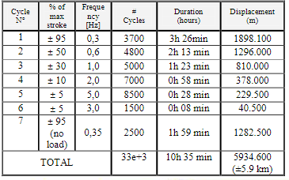

7.9. Evaluation models: endurance of the actuator (student version)#
Written by Marc Budinger (INSA Toulouse) and Scott Delbecq (ISAE-SUPAERO), Toulouse, France
7.9.1. Endurance specifications#
In the description of the TVC system given in the following article an endurance test profile composed of multiple sinusoidal displacements is given.
Endurance profile for P80 EMA

Exercice: declare the magnitude displacement, frequency and number of cycles (divided by 100 here) informations in 1D arrays (numpy) for cycles 1 to 6 in a global a Pandas dataframe called ‘Profil’.
from IPython.display import Markdown as md # enable Markdown printing
import numpy as np
import pandas as pd
from math import pi
# Declaration of amplitude, frequency and number of cycles 1 to 6
lever_arm = 1.35 # [m] Lever Arm
stroke = 6 * pi / 180 * lever_arm # [m] Stroke
profil = pd.DataFrame()
profil
with:
A [m], magnitude of stroke;
f [Hz], frequency;
Nc [-], number of cycles.
7.9.2. Generation of the test profiles#
The target is now to generate from this specification a set of time vectors representing the displacement, speed and acceleration.
Exercice: define a function which take as parameters a dataframe profil and a time step and return the desired time vectors. Remark: ‘arange’, ‘concatenate’ and ‘array’ functions of numpy can be usefull.
def test_profiles(profil, step_size):
tmin = 0
time = np.array([])
position = np.array([])
speed = np.array([])
acceleration = np.array([])
for A, f, Nc in zip(profil.A, profil.f, profil.Nc):
tmax = Nc / f
# time vector
t = np.arange(tmin, tmin + tmax, step_size)
# Position, speed and Acceleration vectors
X = A * np.sin(2 * pi * f * t)
Xp = A * 2 * pi * f * np.cos(2 * pi * f * t)
Xpp = -A * (2 * pi * f) ** 2 * np.sin(2 * pi * f * t)
# Concatenation of multiple cycles
time = np.concatenate((time, t))
position = np.concatenate((position, X))
speed = np.concatenate((speed, Xp))
acceleration = np.concatenate((acceleration, Xpp))
# new start time for the next cycle
tmin = tmin + tmax
d = {
"t": time,
"position": position,
"speed": speed,
"acceleration": acceleration,
}
df = pd.DataFrame(data=d)
return df
df = test_profiles(profil, 1 / max(profil.f) / 20)
df
---------------------------------------------------------------------------
AttributeError Traceback (most recent call last)
/tmp/ipykernel_2728/1604667484.py in ?()
---> 35 def test_profiles(profil, step_size):
36 tmin = 0
37 time = np.array([])
38 position = np.array([])
/opt/hostedtoolcache/Python/3.9.21/x64/lib/python3.9/site-packages/pandas/core/generic.py in ?(self, name)
5898 and name not in self._accessors
5899 and self._info_axis._can_hold_identifiers_and_holds_name(name)
5900 ):
5901 return self[name]
-> 5902 return object.__getattribute__(self, name)
AttributeError: 'DataFrame' object has no attribute 'f'
The combination of cycles can now be plot :
import matplotlib.pyplot as plt
# Position
plt.figure()
plt.subplot(311, xlabel="Time [s]")
plt.plot(df["t"], df["position"])
plt.ylabel("Position [m]")
# Speed
plt.subplot(312, xlabel="Time [s]")
plt.plot(df["t"], df["speed"])
plt.ylabel("Speed [m/s]")
# Acceleration
plt.subplot(313, xlabel="Time [s]")
plt.plot(df["t"], df["acceleration"])
plt.ylabel("Acceleration [m/s²]")
---------------------------------------------------------------------------
NameError Traceback (most recent call last)
Cell In[3], line 6
4 plt.figure()
5 plt.subplot(311, xlabel="Time [s]")
----> 6 plt.plot(df["t"], df["position"])
7 plt.ylabel("Position [m]")
9 # Speed
NameError: name 'df' is not defined
7.9.3. Force mission profile#
Exercice: Knowing the main characteristics of the nozzle (stiffness of 1.52E+04 Nm/deg, viscous damping of 1.74E+02 Nms/deg, inertia of 1.40E+03 kg.m^2), calculate and plot the mechanical force to be applied by the actuation system.
# Definition of nozzle equivalent parameters with engineering units
Jnozzle = 1.40e03 # [kg.m2] Inertia
Knozzle = 1.52e04 # [Nm/deg] Stiffness
Fnozzle = 1.74e02 # [Nms/deg] Viscous damping
# Calculate SI unit values of Knozzle and Fnozzle
# pi value is math.pi
Knozzle = Knozzle / (pi / 180)
Fnozzle = Fnozzle / (pi / 180)
# Angular mission profiles (nozzle)
df["teta"] = df["position"] / lever_arm
df["tetap"] = df["speed"] / lever_arm
df["tetapp"] = df["acceleration"] / lever_arm
# Torque and force calculation
df["Fact"] =
# Plot force mission profile
plt.plot(df["t"], df["Fact"])
plt.ylabel("Force (N)")
plt.xlabel("Time (s)")
Cell In[4], line 18
df["Fact"] =
^
SyntaxError: invalid syntax
7.9.4. Rolling fatigue#
The rolling fatigue for a variable mission profile is evaluated in two stages:
firstly by calculating the number of revolutions and an equivalent rolling fatigue effort called \(F_{RMC}\) (RMC for RootMean Cube)
\(F_{RMC}=(\frac{1}{\int |\dot{x}| {d}t} \int |F|^3 |\dot{x}| {d}t)^{1/3}\)then by obtaining a fatigue effort \(F_d\) equivalent to 1 million rev.
\(F_d^3 . N_{ref} = F_{RMC}^3. N_{cycles}\)
We will assume here that the screw/nut system has a pitch of 10 mm/rev. Examples of thrust bearings can be found here.
Exercice: Calculate \(F_{RMC}\) and \(F_d\). Compare relative ratio between \(C_0\) and \(C_d\). Conclusion.
pitch = 10e-3 # [m/rev] pitch of the roller screw
# Computation of integrals avec np.trapz
# Global distance
distance =
# Cumulative damage
FcubeD =
# Root Mean Cube
FRMC =
# Number of rev for the mission profile
Nturn =
# Dynamic equivalent load
Fd =
md(
"""
The Root Mean Cube force is *F<sub>RMC</sub>* = {:.0f} kN
The number of turns = {:.2g}
The equivalent dynamic load for one million revolutions is *F<sub>d</sub>* = {:.0f} kN
""".format(
FRMC / 1e3, Nturn, Fd / 1e3
)
)
Cell In[5], line 6
distance =
^
SyntaxError: invalid syntax
Exercice for excel users: calculate RMC force and equivalent dynamic force with the mission profile saved in the
FatigueProfil.xlsxfile.
# Profil mission export to excel
df.to_excel("FatigueProfil.xlsx")
---------------------------------------------------------------------------
NameError Traceback (most recent call last)
Cell In[6], line 2
1 # Profil mission export to excel
----> 2 df.to_excel("FatigueProfil.xlsx")
NameError: name 'df' is not defined
7.9.5. Analytic calculation of equivalent rolling force#
The following figures show the evolution of the actuator forces as a function of the position, speed and acceleration.
Exercice: Derive from it a simplified approach allowing to calculate the rolling fatigue stress in a fast way directly from the table of specifications of fatigue life cycles. Compare your results with the calculations made directly on the mission profile.
# Plot force mission profile
plt.figure(3)
plt.subplot(131)
plt.plot(df["position"], df["Fact"])
plt.ylabel("Force [N]")
plt.xlabel("Position [m]")
plt.subplot(132)
plt.plot(df["speed"], df["Fact"])
plt.xlabel("Speed [m/s]")
plt.gca().axes.get_yaxis().set_visible(False)
plt.subplot(133)
plt.plot(df["acceleration"], df["Fact"])
plt.xlabel("Acceleration [m/s²]")
plt.gca().axes.get_yaxis().set_visible(False)
---------------------------------------------------------------------------
NameError Traceback (most recent call last)
Cell In[7], line 5
2 plt.figure(3)
4 plt.subplot(131)
----> 5 plt.plot(df["position"], df["Fact"])
6 plt.ylabel("Force [N]")
7 plt.xlabel("Position [m]")
NameError: name 'df' is not defined
The force is mainly proportional to the position: therefore the effect of the stiffness of the flexible bearing dominates this fatigue cycle. In this case the calculation of the fatigue force can be carried out analytically using the following equations:
\(F_{RMC}=(\frac{1}{\int |\dot{x}| {d}t} \int |F|^3 |\dot{x}| {d}t)^{1/3}\)
where:
\(F(t)=Kx(t)=F_kcos(\omega_kt)\) with \(x(t)=X_kcos(\omega_kt)\) and \(F_k=KX_k\)
\(\dot{x}(t)=-X_k\omega_ksin(\omega_kt)\)
with:\(F_k\) magnitude of sinusoidal forces;
\(A_k\) magnitude of sinusoidal displacements;
\(N_k\)
Thus:
\(F_{RMC}^3 = \frac{\sum{\frac{F_k^3}{4}A_k N_k}}{\sum{A_k N_k}}\)
We have used following trigonometric formula:
\(cos(\theta)^3sin(\theta) = cos(\theta)^2 sin(\theta)cos(\theta) = \frac{1+cos(2\theta)}{2} \frac{sin(2\theta)}{2} \)
# Profil
fatigue_profil = pd.DataFrame(
{
"A": np.array([0.95, 0.5, 0.3, 0.1, 0.05, 0.05]) * stroke,
"f": np.array([0.3, 0.6, 1, 2, 5, 3]),
"Nc": np.array([3700, 4800, 5000, 7000, 8500, 1500]),
}
)
fatigue_profil["max_force"] = fatigue_profil["A"] * Knozzle / lever_arm**2
fatigue_profil["distance"] = fatigue_profil["A"] * fatigue_profil["Nc"] * 4
fatigue_profil["Feq^3 Distance"] = (
(fatigue_profil["max_force"]) ** 3 * fatigue_profil["distance"] / 4
)
fatigue_profil
---------------------------------------------------------------------------
NameError Traceback (most recent call last)
Cell In[8], line 10
1 # Profil
2 fatigue_profil = pd.DataFrame(
3 {
4 "A": np.array([0.95, 0.5, 0.3, 0.1, 0.05, 0.05]) * stroke,
(...)
7 }
8 )
---> 10 fatigue_profil["max_force"] = fatigue_profil["A"] * Knozzle / lever_arm**2
11 fatigue_profil["distance"] = fatigue_profil["A"] * fatigue_profil["Nc"] * 4
13 fatigue_profil["Feq^3 Distance"] = (
14 (fatigue_profil["max_force"]) ** 3 * fatigue_profil["distance"] / 4
15 )
NameError: name 'Knozzle' is not defined
Frmc = (fatigue_profil["Feq^3 Distance"].sum() / fatigue_profil["distance"].sum()) ** (1 / 3)
md(
"""
The calculated Root Mean Cube force is *F<sub>RMC</sub>* = {:.0f} kN
which can be compared to previous result.
""".format(
FRMC / 1e3
)
)
---------------------------------------------------------------------------
KeyError Traceback (most recent call last)
File /opt/hostedtoolcache/Python/3.9.21/x64/lib/python3.9/site-packages/pandas/core/indexes/base.py:3802, in Index.get_loc(self, key, method, tolerance)
3801 try:
-> 3802 return self._engine.get_loc(casted_key)
3803 except KeyError as err:
File /opt/hostedtoolcache/Python/3.9.21/x64/lib/python3.9/site-packages/pandas/_libs/index.pyx:138, in pandas._libs.index.IndexEngine.get_loc()
File /opt/hostedtoolcache/Python/3.9.21/x64/lib/python3.9/site-packages/pandas/_libs/index.pyx:165, in pandas._libs.index.IndexEngine.get_loc()
File pandas/_libs/hashtable_class_helper.pxi:5745, in pandas._libs.hashtable.PyObjectHashTable.get_item()
File pandas/_libs/hashtable_class_helper.pxi:5753, in pandas._libs.hashtable.PyObjectHashTable.get_item()
KeyError: 'Feq^3 Distance'
The above exception was the direct cause of the following exception:
KeyError Traceback (most recent call last)
Cell In[9], line 1
----> 1 Frmc = (fatigue_profil["Feq^3 Distance"].sum() / fatigue_profil["distance"].sum()) ** (1 / 3)
3 md(
4 """
5 The calculated Root Mean Cube force is *F<sub>RMC</sub>* = {:.0f} kN
(...)
9 )
10 )
File /opt/hostedtoolcache/Python/3.9.21/x64/lib/python3.9/site-packages/pandas/core/frame.py:3807, in DataFrame.__getitem__(self, key)
3805 if self.columns.nlevels > 1:
3806 return self._getitem_multilevel(key)
-> 3807 indexer = self.columns.get_loc(key)
3808 if is_integer(indexer):
3809 indexer = [indexer]
File /opt/hostedtoolcache/Python/3.9.21/x64/lib/python3.9/site-packages/pandas/core/indexes/base.py:3804, in Index.get_loc(self, key, method, tolerance)
3802 return self._engine.get_loc(casted_key)
3803 except KeyError as err:
-> 3804 raise KeyError(key) from err
3805 except TypeError:
3806 # If we have a listlike key, _check_indexing_error will raise
3807 # InvalidIndexError. Otherwise we fall through and re-raise
3808 # the TypeError.
3809 self._check_indexing_error(key)
KeyError: 'Feq^3 Distance'